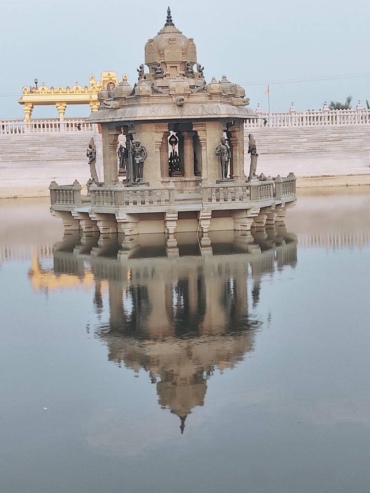
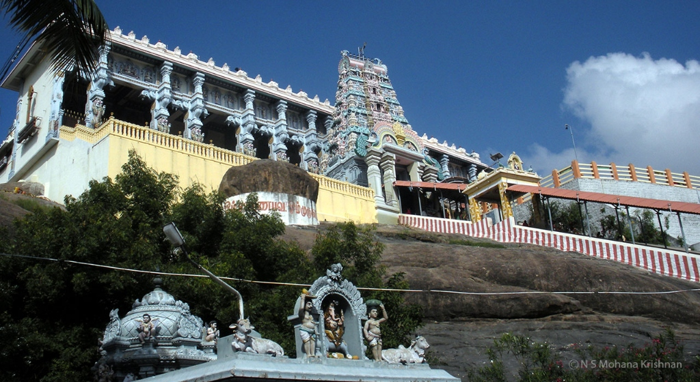
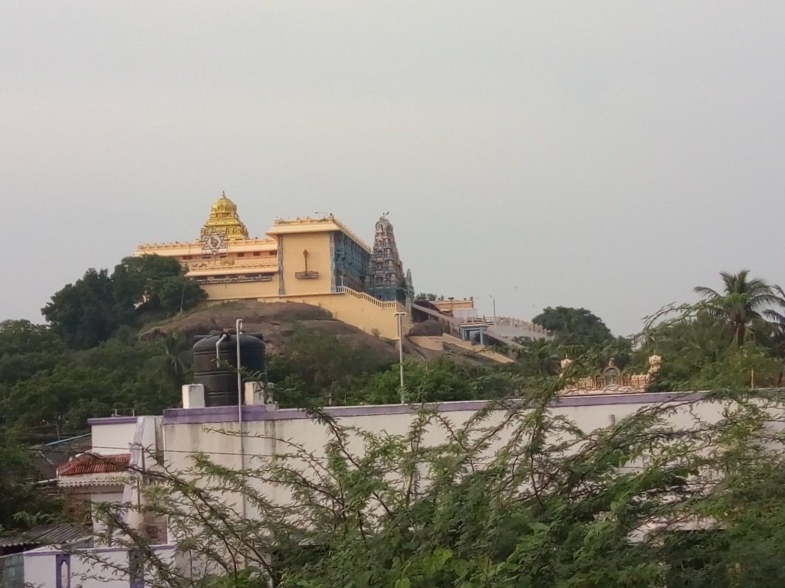
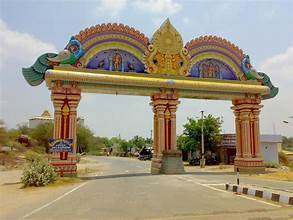

Ratnagiri Murugan Temple
This state Ratnagiri Murugan Temple is inside the fort and can be found on map. This Museum was opened to the public in 1985. It consists of objects of art, archaeology, pre-history, weapons, sculptures, bronzes, wood carvings, handicrafts, numismatics, philately, botany, geology and zoology. It treasures ancient and present day curios relating to Anthropology, Art and Archaeology, Botany, Geology, Numismatics, Pre-history, Zoology, etc.
The historical monuments of the erst while composite North Arcot District are gracefully depicted in the Gallery. Special exhibits include Bronze double antenna sword from Vellore Taluk, dating back to 400 BC., Stone sculptures from Late Pallava to Vijayanagar periods, Ivory chess board and coins used by the last Kandian King of Sri Lanka, Vikrama Raja Singha.
The educational activities of this Museum include Art camp for school students, Study of inscriptions and iconography for college students etc.
The Ratnagiri Murugan Temple is situated besides the main bus stand in Lakshmanaswamy Town Hall. The museum is under the watch of Department of Museums. This might be the most unusual museum that you will ever see. The museum is open on all days from 9 a.m to 12 noon and from 2 p.m. to 5 p.m.
How to Reach Ratnagiri Temple
- 🚌 By Bus: Located 15 km from Vellore on the Chennai-Bangalore Highway (NH 48). All mofussil buses heading towards Chennai stop at Ratnagiri.
- 🚆 By Train: Nearest station is Vellore-Katpadi Junction (KPD) or Mukundarayapuram.
- 🚕 By Taxi: A short 20-minute drive by taxi or auto from Vellore city center.




